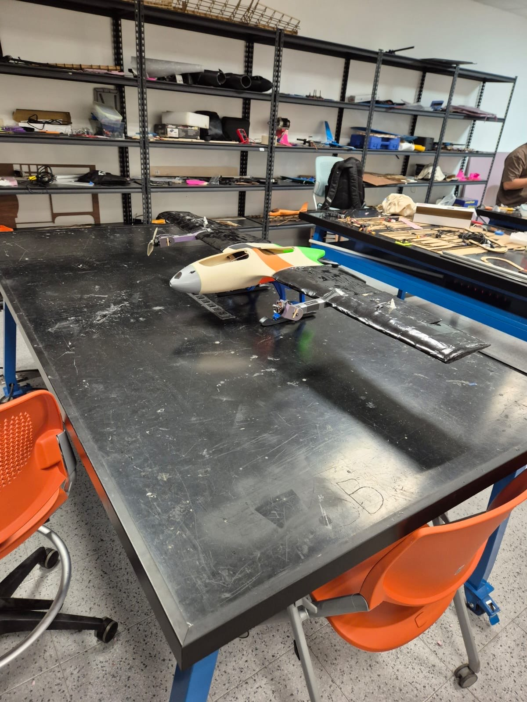
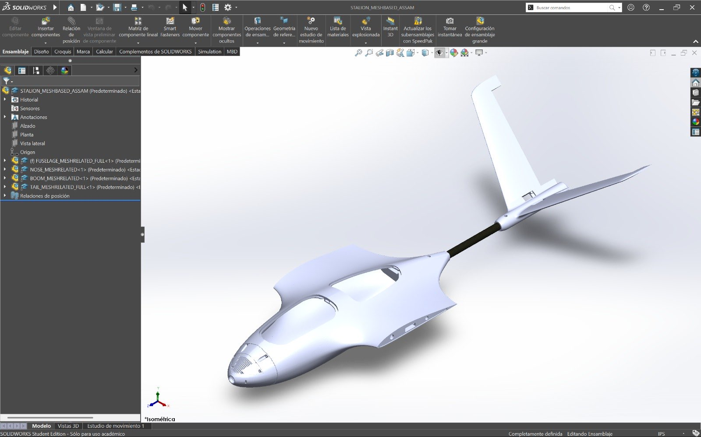
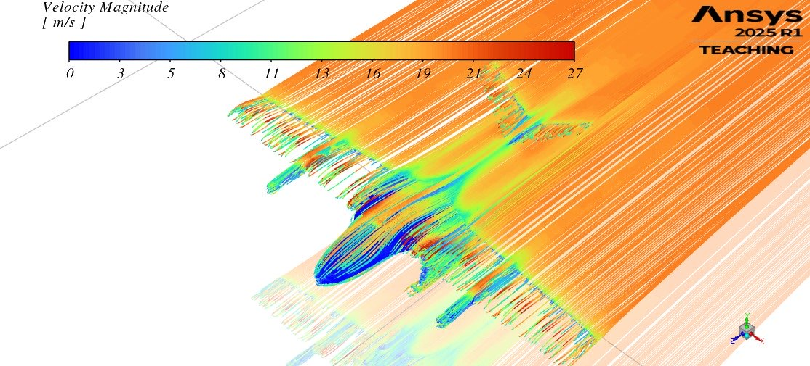
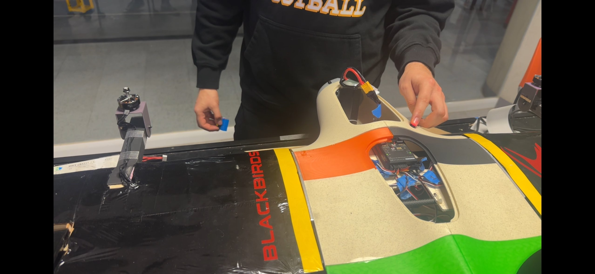

UAV Redesign for Agricultural Monitoring
Skills gained: CAD Design (SolidWorks), CFD & FEA Simulation (ANSYS, MATLAB), Embedded Systems & Avionics (ArduPilot, IMU, Arduino), Manufacturing Preparation (STEP)
This project was developed in partnership with OTECH, focusing on the comprehensive redesign and structural optimization of an agricultural monitoring UAV. The main objective was to achieve a 10% weight reduction while rigorously maintaining structural integrity, flight stability, and aerodynamic performance standards.

A critical engineering challenge early in development arose from file compatibility issues: the initial aircraft files were provided in a legacy format that could not be modified directly in SolidWorks. To overcome this limitation, principles of reverse engineering were applied to manually model every single component of the fuselage in individual parts, culminating in a complete multi-part assembly.


Once the complete assembly was validated and optimized, the files were prepared and exported into STEP formats, enabling smooth translation for rapid prototyping and manufacturing processes. Aerodynamic lift and center of gravity calculations were meticulously verified through MATLAB and CFD simulations in ANSYS to guarantee optimal flight stability.
From an electronics and control perspective, the project integrated the avionics architecture, connecting the main power battery, electronic speed controllers (drivers), and actuators. Using an ArduPilot flight controller equipped with an onboard inertial measurement unit, the system was successfully calibrated so that the aircraft's avionics actively responded to physical motion and attitude changes.

The successful completion of this redesign demonstrated a robust synergy between advanced CAD modeling, aerodynamic simulation, and embedded hardware integration, delivering a flight-ready platform adapted for high-efficiency agricultural operations.